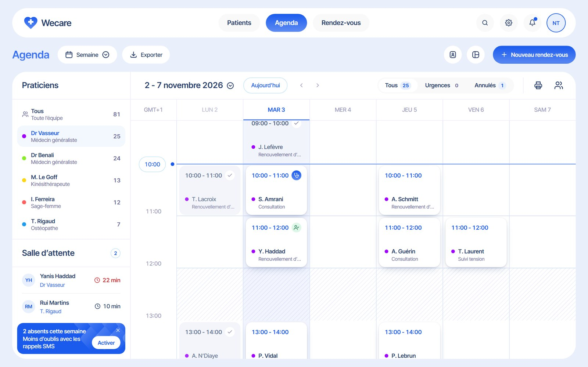
Le point de départ
À l’accueil d’un cabinet, tout arrive en même temps : le téléphone sonne, un patient se présente, un rendez-vous saute. L’agenda doit répondre en deux secondes, sans faire changer de page.
J’ai dessiné l’interface dans Figma, puis je l’ai intégrée en code. Une fois l’agenda rempli de vraies journées, j’ai fait évoluer ma structure : un haut de page plus compact, des cartes sans contour et une nouvelle organisation du planning.
Lire vite
Voir qui est pris, qui est libre et ce qui est urgent, d’un coup d’œil.
Agir sur place
Déplacer, annuler ou réserver sans quitter le planning.
Ne rien perdre
Pouvoir annuler une action et retrouver sa saisie après une interruption.
Les points forts
Ce que je retiens de ce projet, avant d’entrer dans le détail.
Les docteurs à gauche, la semaine à droite
Le qui, puis le quand : un clic sur un nom suffit à changer d’agenda.
Les chiffres dans le filtre
Tous, Urgences et Annulés annoncent leur nombre et suivent la vue affichée.
Un glisser-déposer qui vérifie
Il contrôle chaque heure et demande une confirmation, car un patient est concerné.
Une recherche partout
Ctrl + K retrouve un patient, un téléphone, un dossier ou un docteur.
Une réservation en quatre étapes
Avec une sortie sans perte et un vrai plan B si le créneau vient d’être pris.
Un design system vivant
Sa page utilise le même code que l’application, composants et variantes compris.
Le planning
La semaine d’un docteurvue de base
J’ai d’abord placé les docteurs en colonnes, mais ils faisaient doublon avec la liste de gauche. J’ai donc mis les docteurs à gauche et les jours à droite. L’agenda s’ouvre sur une semaine, avec aujourd’hui surligné et une ligne bleue pour l’heure en cours.
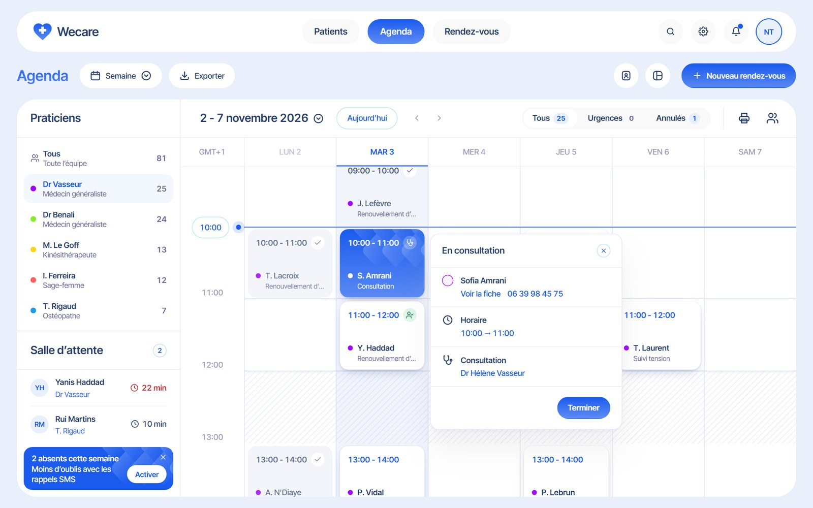
Toute l’équipevue dense
Cinq docteurs sur six jours ne tenaient pas en cartes. J’ai remplacé le motif par le nom du docteur : la ligne reste lisible, sans mémoriser cinq couleurs. « + 2 libres » répond à la vraie question de l’accueil, et ouvre la réservation.
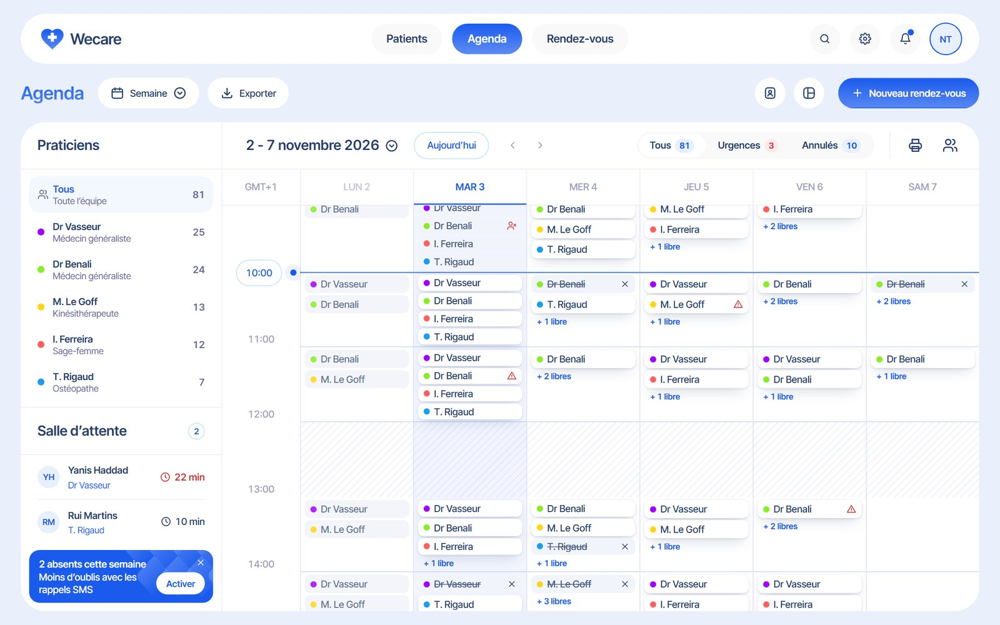
La journéevue détaillée
La vue Jour garde une colonne par docteur, utile pour comparer les agendas d’une même journée. Elle s’ouvre aussi d’un clic sur un jour de la semaine.
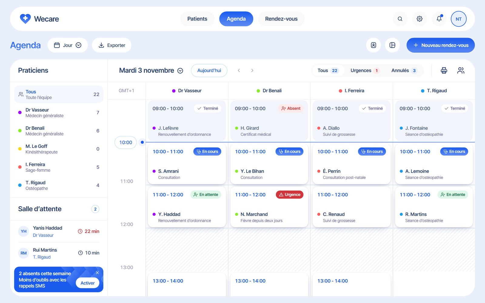
Lire d’un coup d’œil
Chaque carte devait dire l’essentiel sans bruit visuel. J’ai testé plusieurs cartes avant de retenir une carte blanche sans contour, posée sur une ombre douce.
- En haut l’horaire et le statut, en bas le patient et le motif.
- La couleur du praticien est réduite à un point, toujours accompagnée d’un nom.
- Chaque statut combine une icône, un mot et une couleur, jamais la couleur seule.
- Le rouge reste réservé aux urgences, aux alertes et aux erreurs.
- Un rendez-vous passé prend un fond bleu très clair pour laisser passer le travail à venir.
- Une carte sélectionnée passe en bleu, avec un motif que j’ai dessiné et réutilisé dans toute l’interface.
J’ai aussi retiré les badges de résumé en haut de page pour porter les chiffres dans le filtre lui-même. Un clic sur Urgences isole les cas concernés et fait défiler le planning jusqu’au premier.
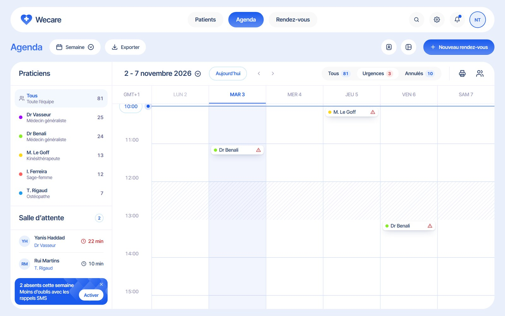
Agir sans quitter le planning
Je voulais que les actions du quotidien se fassent là où l’on regarde déjà.
Déplacer un rendez-vousglisser-déposer
Un aperçu suit l’heure visée : bleu si elle est libre, rouge si le docteur est pris ou absent. Le dépôt ouvre une confirmation avec l’ancien et le nouveau moment, puis un message permet encore d’annuler.
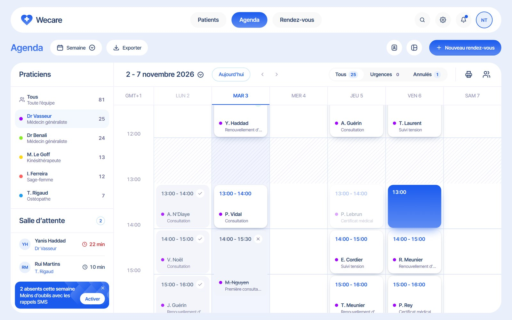
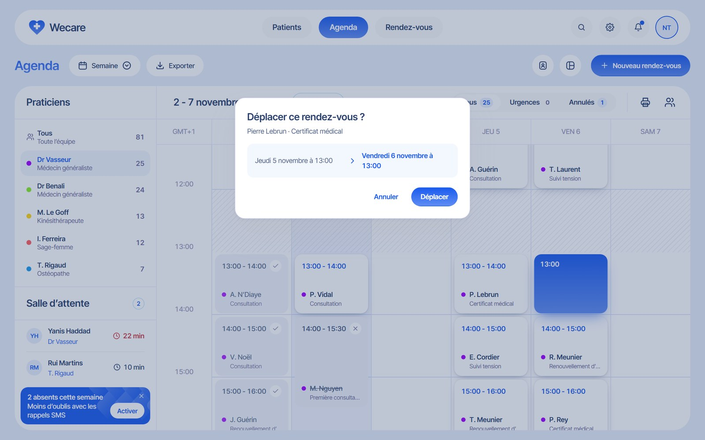
Trouver en un instantCtrl + K
Depuis n’importe quelle page, la recherche trouve un patient par nom, téléphone ou numéro de dossier, ainsi que son prochain rendez-vous. Tout se pilote au clavier, ce qui compte quand on a un téléphone à la main.
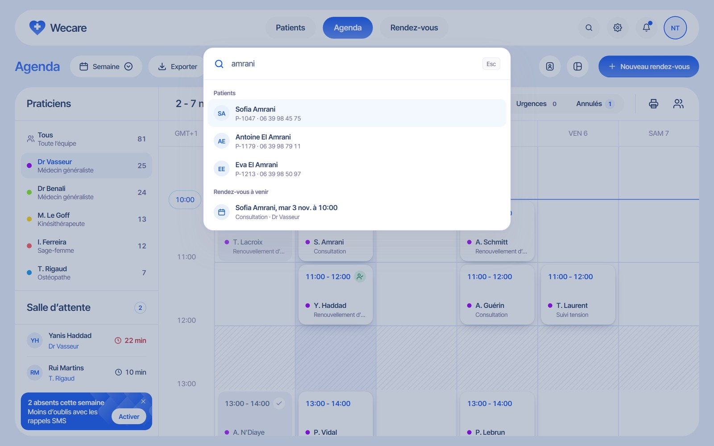
Prévenir les oublisrappels SMS
L’encart de gauche relie les rappels à un fait concret, le nombre d’absents de la semaine, et s’efface si la salle d’attente a besoin de la place. L’écran de réglage montre un aperçu du message avec un vrai rendez-vous. Dans cette démonstration, aucun SMS n’est envoyé.
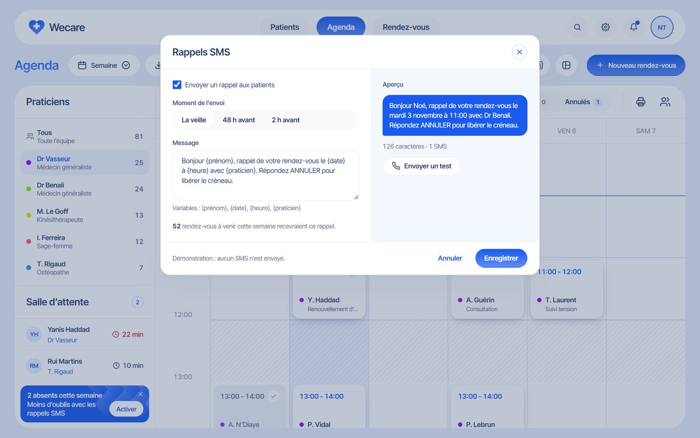
Prendre un rendez-vous
Le parcours tient en quatre étapes : patient, motif, créneau, confirmation. Chaque rendez-vous dure au moins une heure et le récapitulatif reste visible à droite.
- Un clic sur une case vide remplit déjà la date, l’heure et le docteur.
- Le retour à l’agenda retrouve le même docteur, la même semaine et la même position.
- Une saisie commencée est conservée, avec un bouton pour la reprendre.
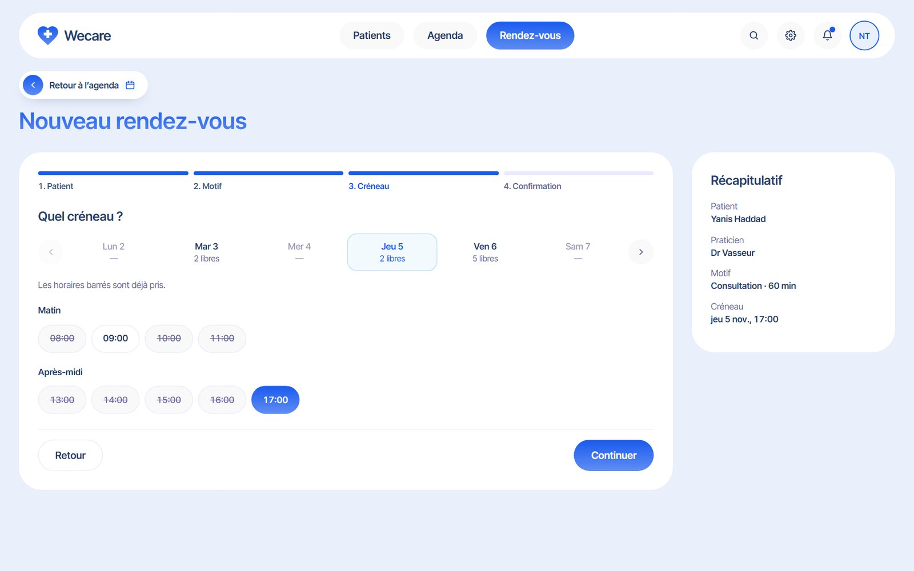
Le cas le plus sensible : un collègue réserve le même créneau pendant la saisie. Le dossier reste intact et trois autres créneaux sont proposés sur place.
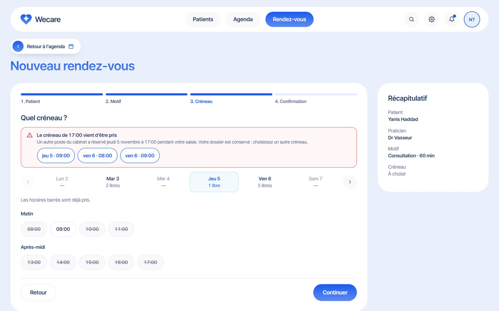
Les patients
La liste se cherche et se filtre par statut, puis la fiche réunit les coordonnées, le prochain rendez-vous, l’historique, les notes et les documents. Les notes médicales dépendent du rôle : le secrétariat ne voit que ce qui le concerne.
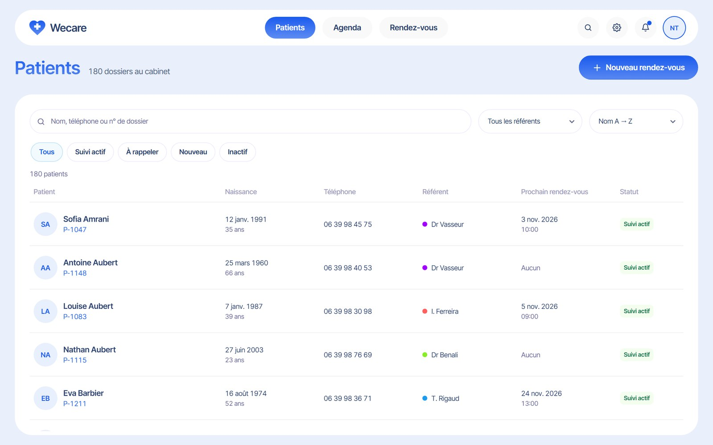
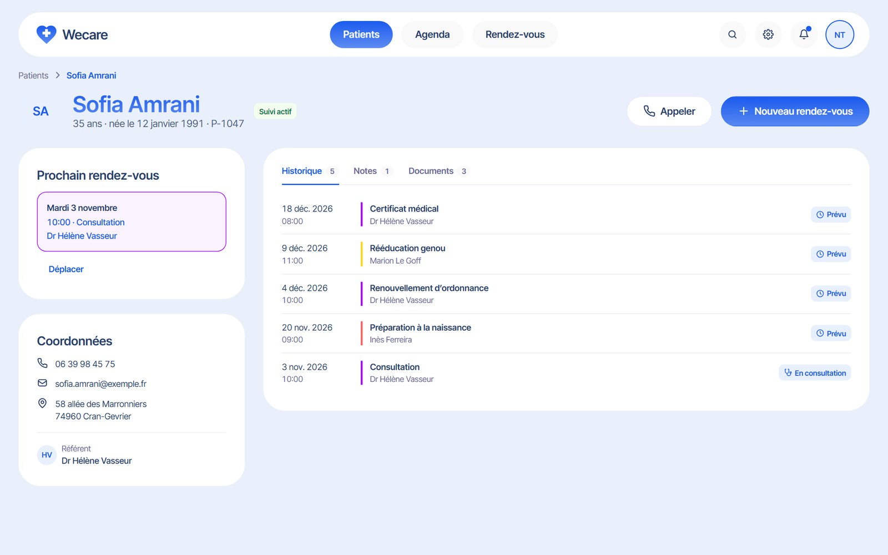
Tous les états
Un outil de travail n’est pas toujours plein. J’ai conçu chaque écran avec son état vide, son chargement et son erreur, et un message qui propose toujours la suite. Le menu des réglages permet de les afficher dans la démonstration.
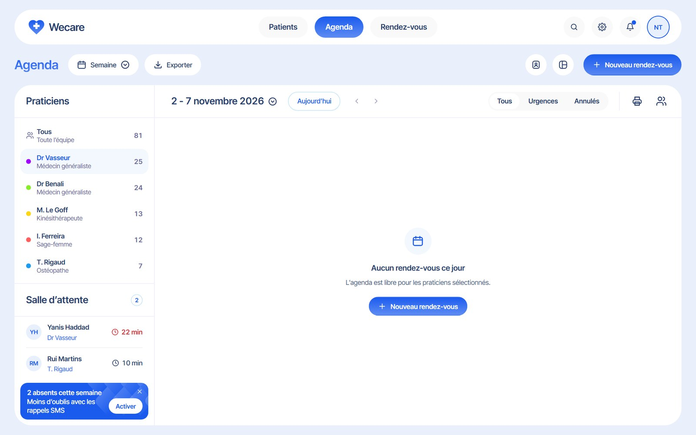
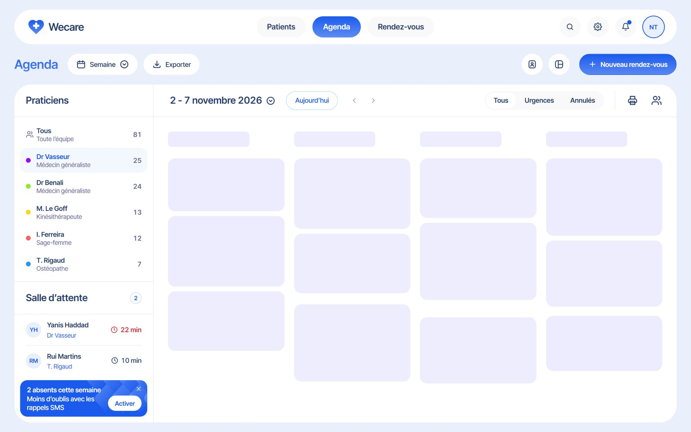
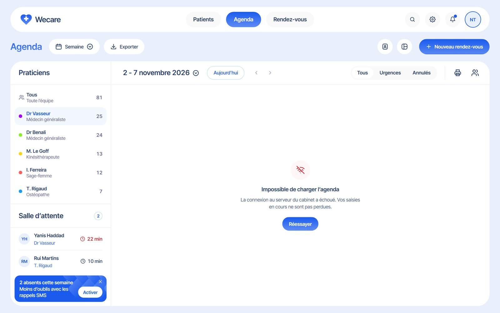
Le design system
J’ai structuré mes couleurs, typographies et composants en design system, avec leurs variantes et leurs règles d’usage. Sa page utilise le même code que l’application : quand un composant change, sa documentation change avec lui.
Faites défiler ou attrapez la fenêtre pour parcourir le design system.Faites défiler dans la fenêtre pour parcourir le design system.
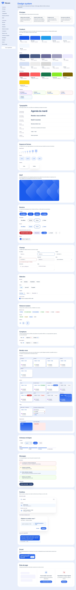
La fabrication
J’ai codé l’application à la main pour qu’elle se comporte comme un vrai outil, et pas comme une simple maquette.
- HTML, CSS et JavaScript simples, sans framework.
- Des tokens partagés entre l’application, son design system et le fichier d’import pour Figma.
- Une interface qui s’adapte à la taille de la fenêtre, pour montrer le plus de planning possible.
- Une démonstration qui se souvient : les changements restent dans le navigateur, avec un bouton pour tout réinitialiser.
- Un guide discret propose trois essais à la première ouverture.
- L’accessibilité dans les détails : recherche au clavier, focus visible, statuts jamais portés par la couleur seule, animations réduites sur demande.